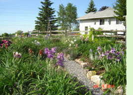
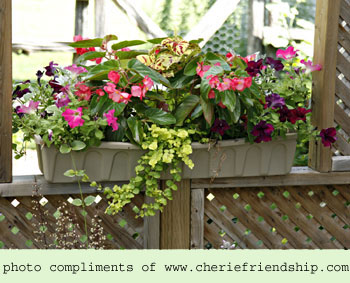
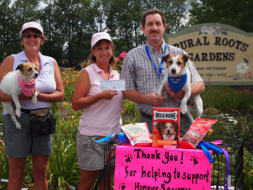
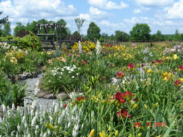

|
About Us  Thank you to all of our devoted customers, the daylily lovers and gardeners alike. 2013 was a great year and we look forward to seeing everyone again this year. This year we would like to begin by saying thank you to our very dear friends and mentors Don and Anne Martin. They have chosen to close their portion of our site to the public. Life has taken them on a new path and we wish them all the best for the future. Anne continues to hybridize and fundraise locally in Shelbourne, Nova Scotia. Some of these plants can be viewed in our very own "Martin Garden" dedicated to them. Their love and inspiration has helped guide us to be the business we are today.After fundraising for our local hospital for 5 years we decided to change up and donated 2013 to the animals of our local shelter. Our 6th Fundraiser brought in over $900.00 and a wonderful selection of goodies and supplies of food and treats.  We are grateful and happy to announce our 2014 fundraiser once again will be going to the Kawartha Lakes Humane Society. Hopefully you can join us this year and help out our donations.
The gardens are continually changing with the additions of new daylilies and perennials. Our hybridizing program is evolving beautifully with some great future introductions. We are looking forward to another season and what it may bring...
 We wish you good health, happiness and a great gardening season for 2014.
If you have any questions or comments, please email us at rrgardens@nexicom.net Our deepest sympathy goes out to Anne Martin and family. Don passed away March 2nd 2014. To honor him we are dedicating the proceeds of our fundraiser this year in his name. He will be sadly missed, but will always be in our hearts. |